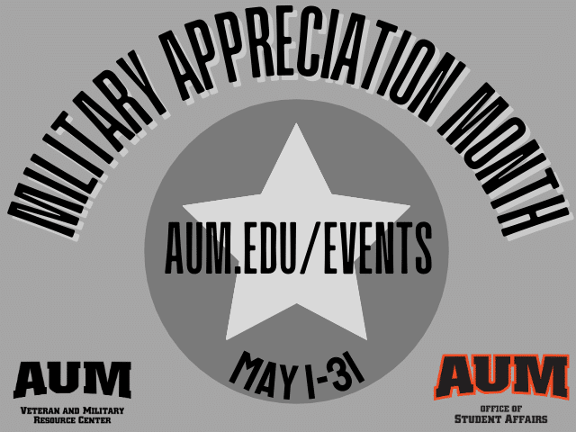
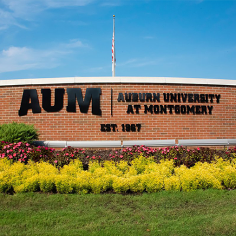

Apply for AUM - Apply Now

Apply for AUM - Apply Now

Date: May 3, 2021 @ 8:30 am - 10:00 am
Location: AUM
Audience: Veterans and Military Resource Center
It’s Finals Week. You’ve got enough things to worry about. Breakfast shouldn’t be one of them. The Veterans and Military Resource Center will be giving snacks and vouchers for free coffee as part of Military Appreciation Month
Date: May 4, 2021 @ 2:00 pm - 3:00 pm
Location: Taylor Center
Audience: Counseling and Health Promotion Services
Focus on YOU! Join us for some self-care and YOU time! Every week we will have a mental health/wellness activity just for you! This event will be held in Taylor Center Lobby next to the AUMazing Bean, Tuesdays from 2 p.m.-3p.m. and Wednesdays from 11 a.m.-Noon. Disability Accommodations: Auburn University at Montgomery is committed to providing its students with an accessible campus and equitable learning environment. If you have a disability that requires academic accommodations, access to assistive technology training.
Date: May 6, 2021 @ 5:00 pm - 7:00 pm
Location: Goodwyn Hall 112
Audience: Clubs and Organizations
InterVarsity will be holding Bible Study every Tuesday until May 11 in Goodwyn Hall 112. Disability Accommodations: Auburn University at Montgomery is committed to providing its students with an accessible campus and equitable learning environment. If you have a disability that requires academic accommodations, access to assistive technology training, events or support services, contact the Center for Disability Services. If you have questions, please contact our office at (334) 244-3631 or cds@aum.edu.
Auburn University at Montgomery seniors Shalom Kim, Haley Hobbs and Tovah Hickman earned top honors at the “Auburn Research: 2021 Student Symposium.” The annual university-wide event hosted by Auburn University spotlights the work of student researchers and their faculty mentors. Kim took first place in the undergraduate STEM oral presentation category for her research project titled “Remdesivir Triphosphate blocks DNA synthesis and promotes exonucleolytic activity of mitochondria DNA polymerase gamma.” “I was so happy to represent AUM in a positive way,” said Kim, a biology pre-health sciences major who is set to graduate May 8. “It feels extremely exciting to win the research symposium and have my research spotlighted. I am truly humbled by this experience.” Hobbs and Hickman received a “Best Undergraduate Student Poster” award for their research titled “Does snail preference to nonnative plant species play a role in shaping plant communities in Alabama.” “We are so happy that something we care about and have been working on for so long was recognized for an award,” Hobbs said. “It has been an amazing and gratifying experience and it makes us excited to get other students involved in the future.” The annual student research symposium — held virtually March 29 – April 2 — gives students an opportunity to showcase their work university-wide and with the general public. Nearly 350 undergraduate and graduate students from Auburn University and AUM participated in this year’s event. In all, 63 students earned awards for their research and creative scholarship posters and oral presentations.
ncreased for Alabamians during COVID-19 pandemic Posted on April 29, 2021 by anettl10 An Auburn University at Montgomery-led research project exploring food access and security in the state found that more Alabamians have experienced food insecurity and adjusted their food buying habits since the COVID-19 pandemic began. AUM Assistant Professor of Kinesiology Deanne Allegro served as the lead researcher for the Alabama study, which is part of a National Food Access and COVID Research Team (NFACT) effort to obtain a comprehensive understanding of how COVID has disrupted food access and security. Deanne Allegro “We have never before experienced a pandemic of this magnitude in our lifetime and immediately the response affected food access and availability for almost everyone,” Allegro said. “Parts of Alabama already experience high rates of food insecurity and limited food access. Understanding who was most greatly affected, how they were affected, and what responses provided the most relief are critical to finding solutions and improving responses in the future.” With researchers from Auburn University’s Department of Department of Nutrition, Dietetics, & Hospitality Management and the Alabama Cooperative Extension System at Auburn University, Allegro began surveying Alabamians about their experiences with food insecurity in June 2020 over a five-week period through social media, media coverage and community partners. The survey included a standardized set of U.S. Department of Agriculture questions.